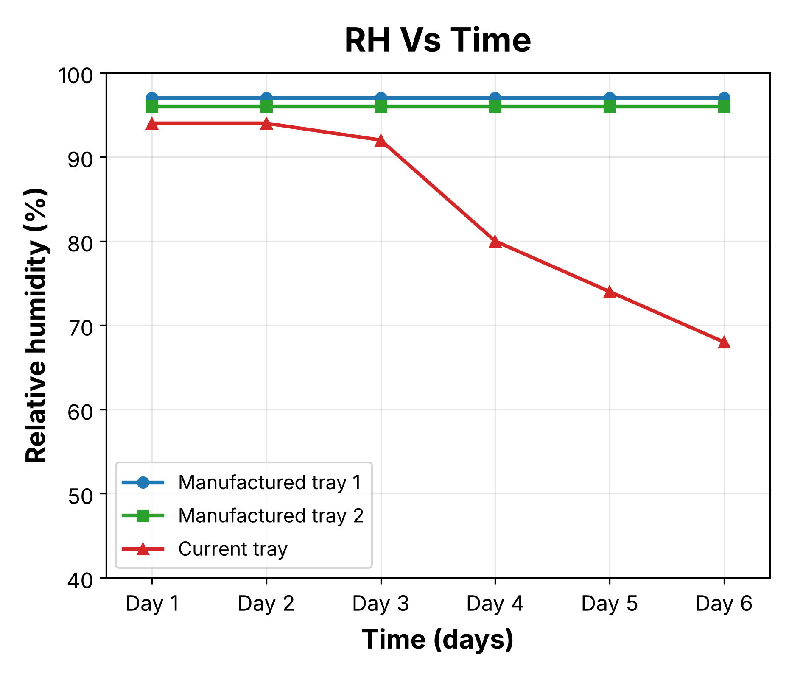
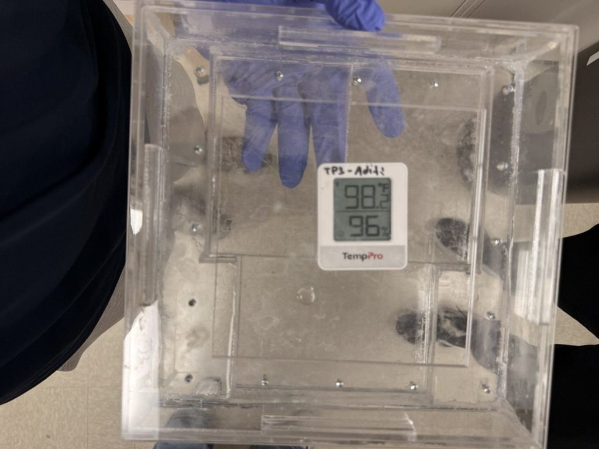
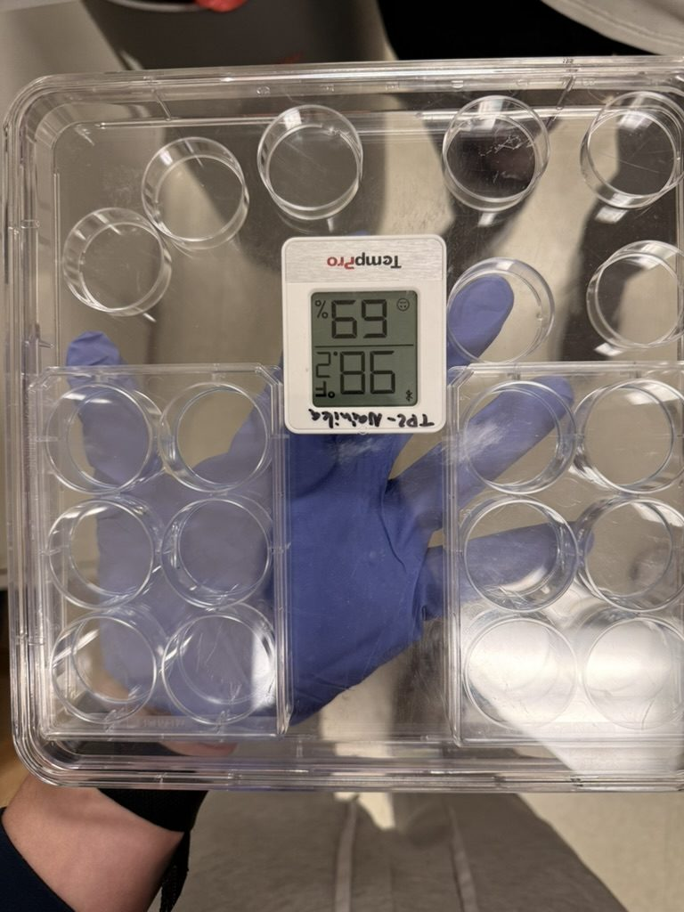
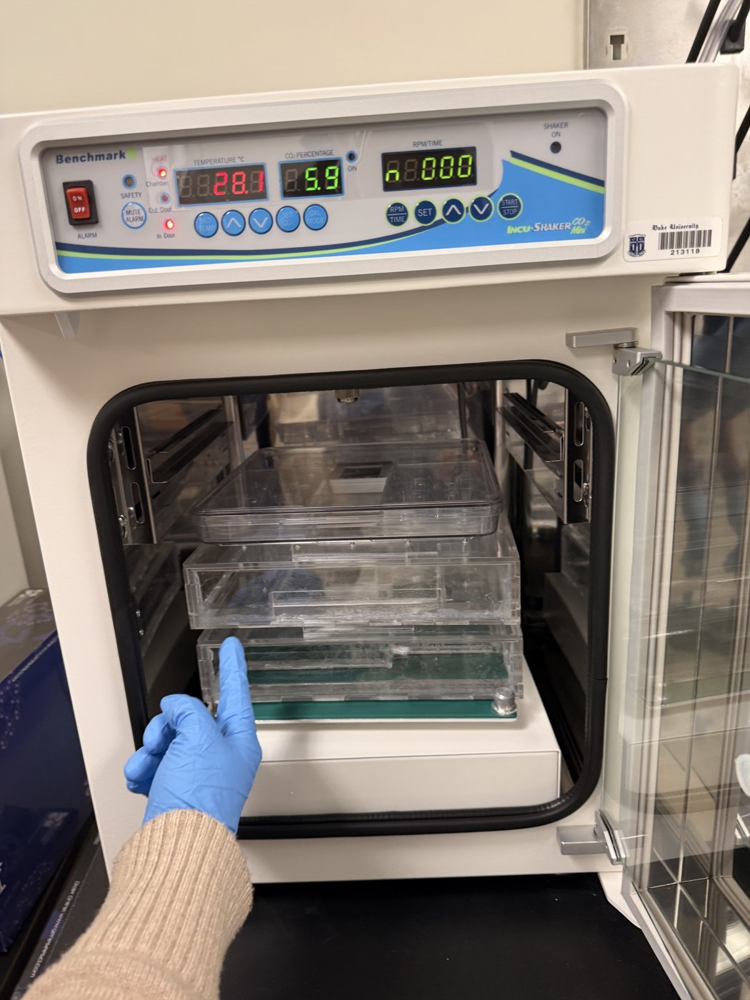
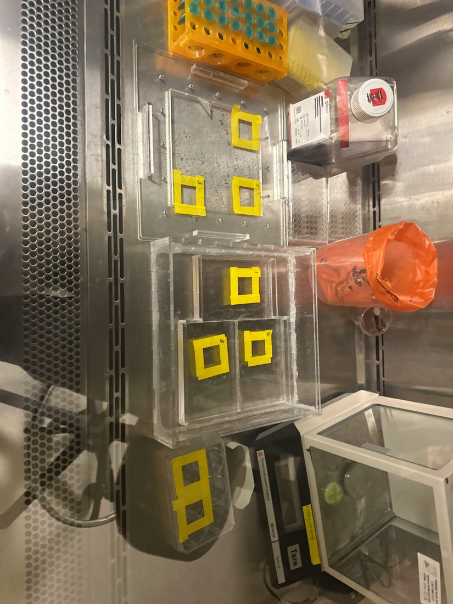
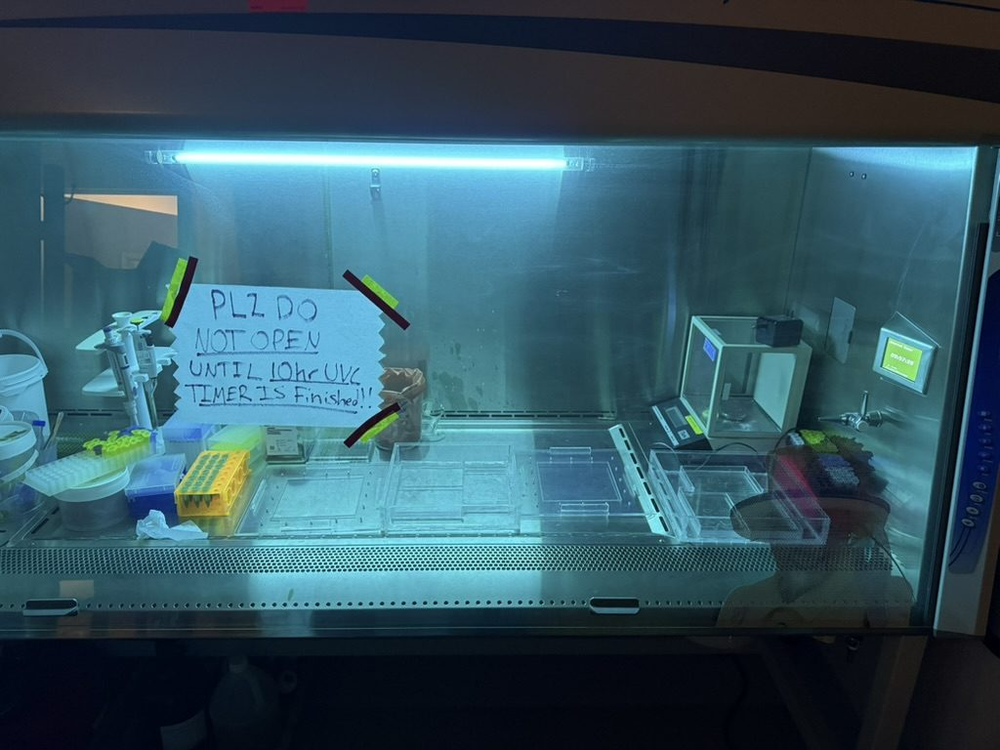
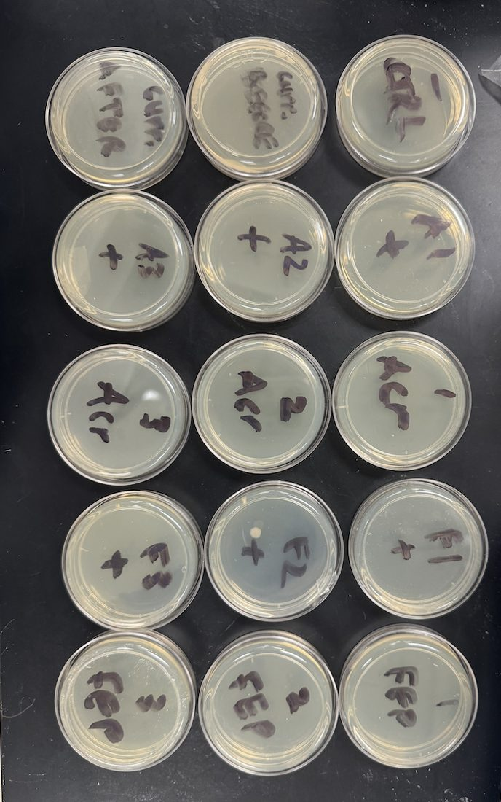
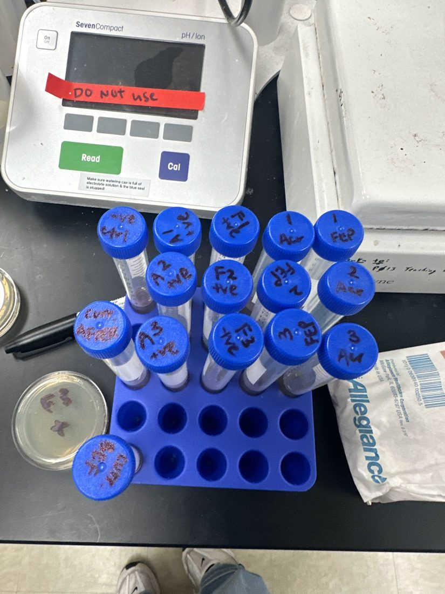

Self-regulating
The tray should hold its humidity by itself, with no one adjusting it. We tracked relative humidity inside each tray over six days with a humidity sensor in each one.
Relative humidity in both manufactured trays through day 6
Relative humidity in the current tray, day 1 to day 6




Water loss
We also weighed the water in the reservoir before and after the test. The control lost 81.3% of its water, while both prototypes lost under 5%.
| Tray | Starting water (g) | Ending water (g) | Loss |
|---|---|---|---|
| Control (Nainika) | 61.50 | 11.50 | 81.3% |
| Prototype (Brad) | 238.38 | 228.31 | 4.22% |
| Prototype (Aditi) | 233.28 | 224.54 | 3.7% |
Ability to maintain the environment of an incubator
Cells need an incubator's conditions, including CO2, to reach the gel through the FEP window while humidity stays in.
Replicable: changing the FEP
Anyone should be able to replace the FEP film the same way every time. These are the steps we wrote.
- Unscrew corner screws
- Unscrew middle screws, then remaining
- Replace FEP and poke holes (use plastic bag)
- Screw corner screws
- Screw middle screws, then remaining
- Make sure tight
- Cut leftover FEP
Timed trials
Six participants followed the steps above to replace the FEP, and we timed each one (minutes:seconds).
| Participant | Time to replace FEP |
|---|---|
| Participant 1 | 6:33.52 |
| Participant 2 | 9:17.6 |
| Participant 3 | 8:32.44 |
| Participant 4 | 10:14.21 |
| Participant 5 | 9:30.45 |
| Participant 6 | 10:36.61 |
| Average | 9:07.47 |
Sterilizable (bacteria)
The tray has to be cleanable so that bacteria do not grow in it between uses.
Before sterilization, bacteria grew on plates from both the control and our manufactured tray. After sterilization, nothing grew on any plate.
What we did
- Mark off 1 x 1 inch squares on each spot: inside the acrylic tray, the FEP filter and the cell culture plate lid
- Swab each square
- Put each swab in TB broth, then discard the swab
- Label the agar plates
- Sterilize with 70% ethanol (we did not wipe with a Kimwipe because it evaporates during UVC sterilization)
- UV sterilization (30 min)
- Swab each square again
- Put each swab in TB broth, then discard the swabs
- Put 4–6 sterile glass beads in each plate
- Pipette 50 microliters of broth into each plate
- Shake the plates, then discard the glass beads
- Wrap the plates in parafilm
- Place in the incubator for 48 hours




Ability to withstand sterilization
The tray should hold up to the sterilization it needs between uses.
Replicable: manufacturing time
Another lab should be able to build the tray without special skill or much time. Our goal was to build one tray in under 90 minutes (1.5 hours). We timed each step of building three trays. All step times in the table are in minutes. Blank cells (–) were not timed. Tray 1 was not fully timed and Tray 2 has no time for the backscrew step, so their totals are incomplete.
| Step (minutes) | Tray 1 | Tray 2 | Tray 3 |
|---|---|---|---|
| Laser cut lid | – | 10.00 | 30.42 |
| Laser cut box | – | 16.33 | 41.33 |
| Laser cut handles | 5.00 | 5.00 | 5.00 |
| Laser cut tray holders | – | 31.00 | 31.00 |
| Peel acrylic | – | 8.67 | 26.83 |
| Wash / clean acrylic | 17.00 | 20.00 | 25.00 |
| Heat sink lid | – | 24.60 | 12.90 |
| Screw FEP | – | 8.91 | 7.95 |
| Backscrew + unscrew | – | – | 7.04 |
| Glue tray together | 10.00 | 5.00 | 3.00 |
| Glue handles | 4.71 | 3.61 | 3.67 |
| Glue cell holders | 15.00 | 6.00 | 5.00 |
| Silicone tray | 2.50 | 2.00 | 1.75 |
| Total recorded (minutes) | 54.2 | 141.1 | 200.9 |
| Total recorded (hours) | 0.90 | 2.35 | 3.35 |
Our goal was under 90 minutes. Tray 3, the only tray timed for every step, took 200.9 minutes (3.35 hours), more than double the goal. Tray 2 was already at 141.1 minutes (2.35 hours) without the backscrew step. Tray 1’s 54.2 minutes (0.90 hours) leaves out most steps, so it does not count as a full build.